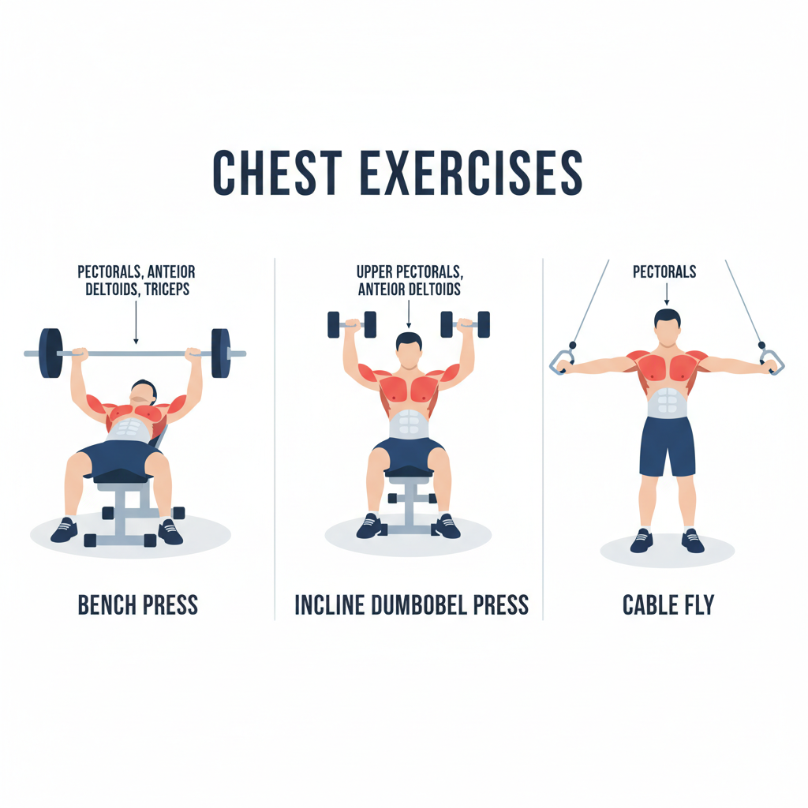
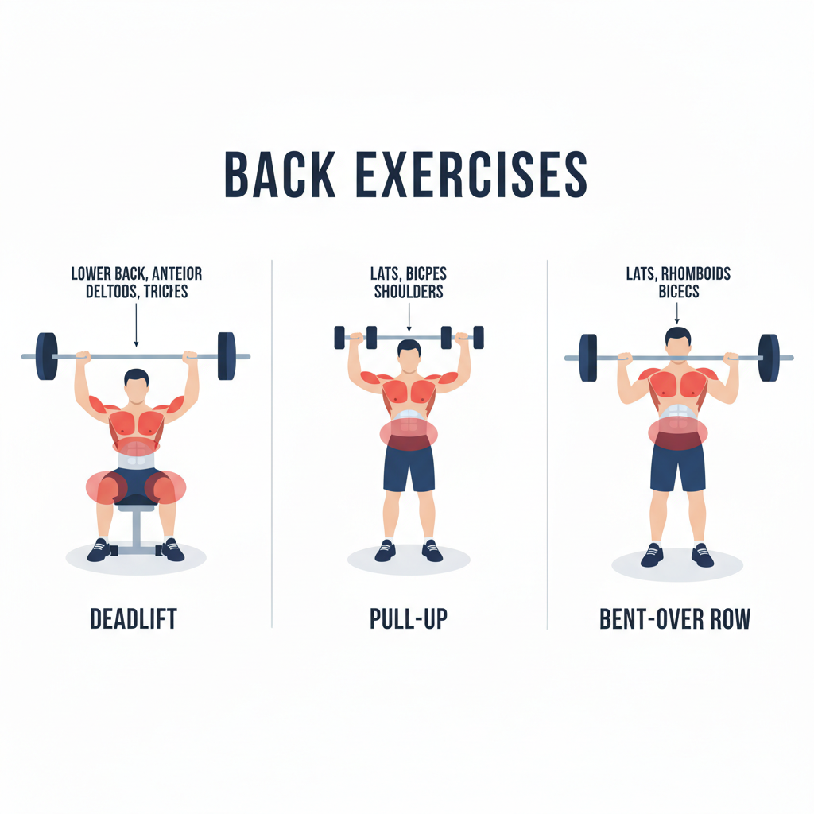
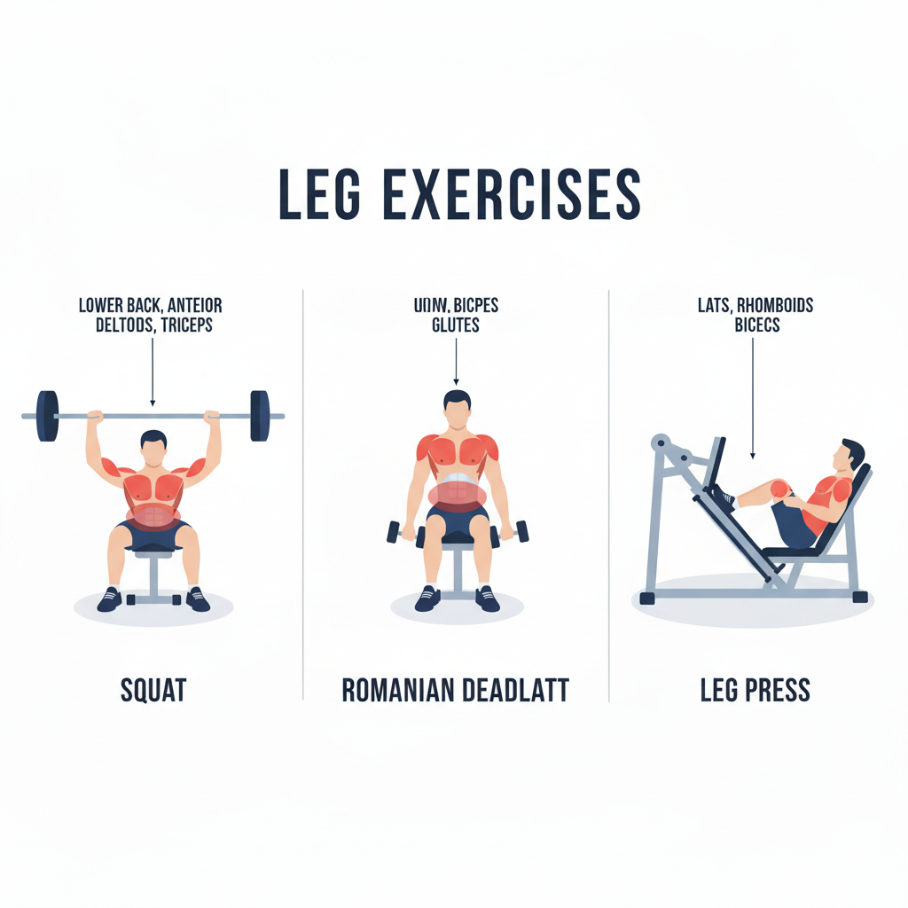
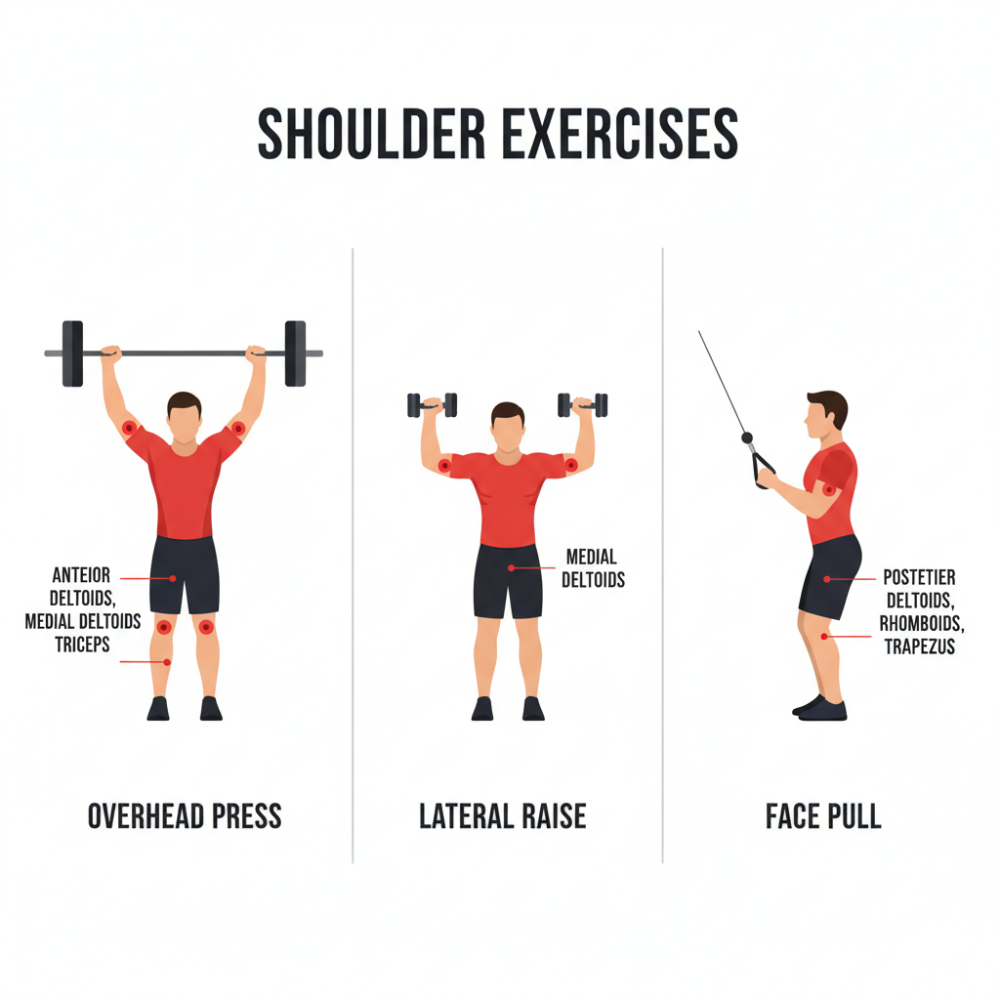
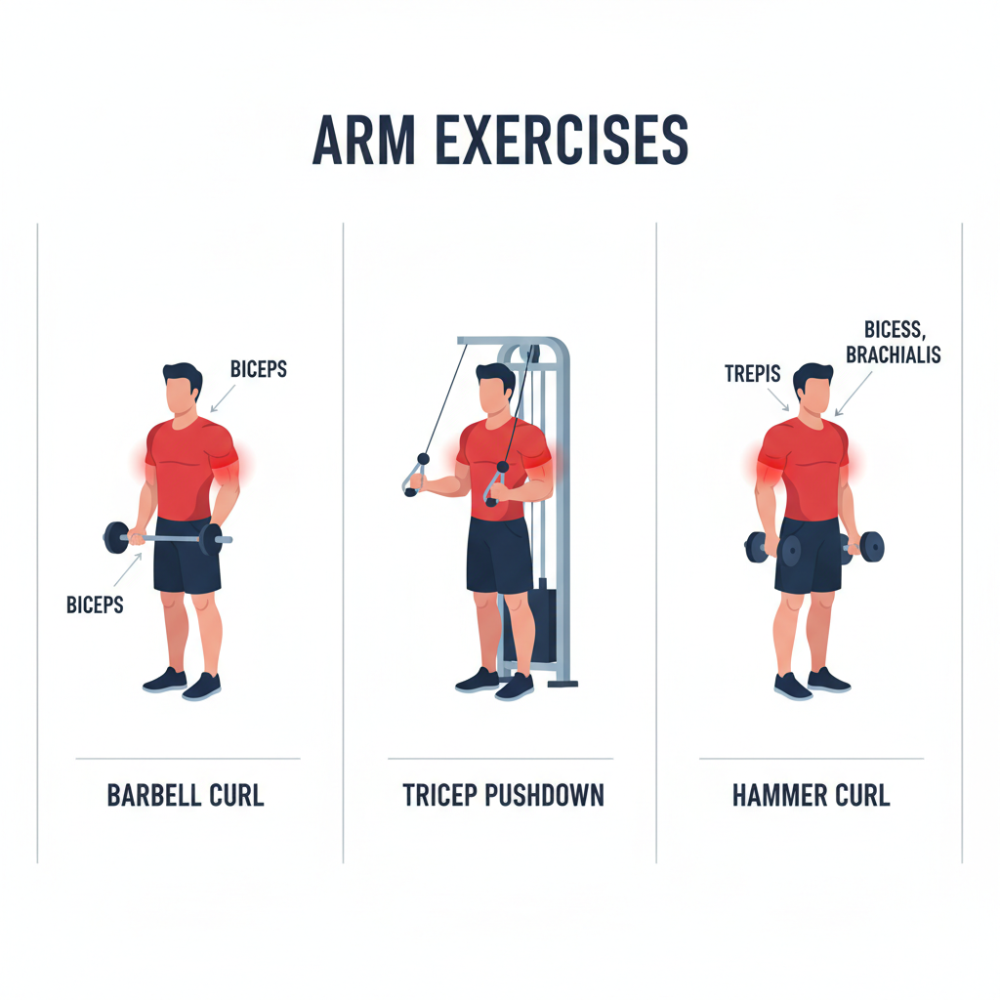

Beginner: 3-Day Full-Body
- Mon/Wed/Fri: Squat, Bench Press, Row, Overhead Press, Deadlift.
- 3 sets x 8-12 reps; focus on form before load.
Intermediate: 4-Day Upper/Lower
📌 Upper Day (Push Focus)
- Bench Press: 4 sets x 6-8 reps - Primary chest builder
- Incline Dumbbell Press: 3 sets x 8-10 reps - Upper chest emphasis
- Barbell Rows: 4 sets x 6-8 reps - Strength phase
- Pull-ups or Lat Pulldown: 3 sets x 8-10 reps - Back width
- Shoulder Press (Machine or Dumbbell): 3 sets x 8-10 reps
- Dips or Chest Dips: 3 sets x 8-12 reps - Tricep/chest
- Face Pulls: 3 sets x 12-15 reps - Rear delts, shoulder health
📌 Lower Day (Squat Focus)
- Barbell Back Squat: 4 sets x 6-8 reps - Main power mover
- Romanian Deadlift (RDL): 4 sets x 6-8 reps - Hamstring strength
- Leg Press: 3 sets x 8-10 reps - Volume and quad hypertrophy
- Leg Curls: 3 sets x 10-12 reps - Hamstring isolation
- Leg Extensions: 3 sets x 10-12 reps - Quad isolation and pump
- Calf Raises: 3 sets x 12-15 reps - Calf development
- Core Work (Planks or Ab Wheel): 3 sets x 10-20 reps
Weekly Structure: Mon: Upper Push, Tue: Lower Squat, Wed: Rest, Thu: Upper Pull, Fri: Lower Deadlift, Sat-Sun: Rest. Adjust volume or intensity based on recovery.
Chest

Bench press, incline dumbbell press, and cable fly are core movements for building chest mass and definition.
Back

Barbell rows, pull-ups, and lat pulldowns develop a wide, thick back and improve posture.
Legs

Squat, Romanian deadlift, and leg press are foundational lifts for lower-body strength and hypertrophy.
Shoulders

Overhead press, lateral raise, and face pull build balanced deltoid size and shoulder health.
Arms

Barbell curls, tricep pushdowns, and hammer curls are effective movements for biceps and triceps development.
Advanced: 5-Day Push/Pull/Legs
- Mon: Push. Tue: Pull. Wed: Legs. Thu: Accessory. Fri: Hybrid volume.
- Use RPE to avoid burnout; deload every 4-6 weeks.
Workout Video Library
The Science of Building Muscle
How To Build Muscle (Explained In 5 Levels)
The #1 Full Body Routine to Build Muscle & Lose Fat
Why YOUR Muscles Aren't Growing (And How to FIX IT)
How Many Sets Do You Really Need to Build Muscle?
Nutrition + Recovery Notes
- Protein 1.6-2.2g/kg; carbs for training energy.
- Sleep 7-9 hours and add active recovery days.